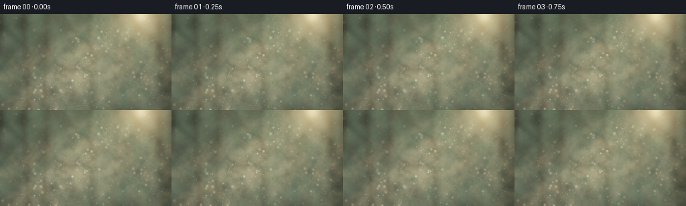
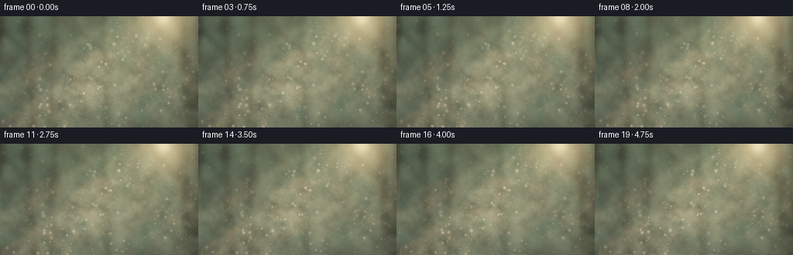

CODING AGENTS AS PIXEL WORLD MODELS
traex/GPT-6.1-Sol · phygen_079
点击播放 · 原生 RGB 像素
逐轮保存的候选
回放视频、检查图与代码变化。
每份候选均可单独播放。实际图片检查记录在下方工具轨迹中。
候选 01播放与检查图
点击播放 · 原生 RGB 像素


展开代码变化
--- 上一保存版本
+++ 本次保存版本
@@ -0,0 +1,120 @@
+from pathlib import Path
+import json
+import math
+import numpy as np
+from PIL import Image, ImageDraw, ImageFilter
+from artifact_io import save
+
+ROOT = Path(__file__).resolve().parent
+SPEC = json.loads((ROOT / 'task_spec.json').read_text())
+W, H = SPEC['width'], SPEC['height']
+S = 3
+SW, SH = W*S, H*S
+rng = np.random.default_rng(79)
+y, x = np.mgrid[0:SH, 0:SW].astype(np.float32)
+x /= S; y /= S
+
+# Deliberately defocused woodland beyond the illuminated air.
+back = np.zeros((SH, SW, 3), np.float32)
+upper = np.exp(-((x-175)/110)**2 - ((y-20)/82)**2)
+back[:] = [0.032, 0.052, 0.040]
+back += upper[..., None] * np.array([0.066, 0.079, 0.040])
+back += (y/H)[..., None] * np.array([0.018, 0.022, 0.017])
+foliage = Image.new('RGB', (SW, SH))
+draw = ImageDraw.Draw(foliage)
+# distant, overlapping foliage silhouettes and soft openings
+for i in range(480):
+ xx, yy = rng.uniform(-25, W+25), rng.uniform(-25, H+30)
+ rr = rng.uniform(2, 12)
+ shade = rng.uniform(.45, 1)
+ c = tuple(int(v*shade) for v in (25, 40, 25))
+ draw.ellipse(((xx-rr)*S, (yy-rr*.65)*S, (xx+rr)*S, (yy+rr*.65)*S), fill=c)
+foliage = np.asarray(foliage.filter(ImageFilter.GaussianBlur(6*S)), dtype=np.float32)/255
+back += foliage*.65
+# trunks lost in the out-of-focus background; no sharp foreground boundaries
+trunks = Image.new('L', (SW, SH))
+draw = ImageDraw.Draw(trunks)
+for tx, width, tilt, alpha in [(-2,16,-.10,225),(34,9,.07,170),(71,6,-.04,150),(133,7,.04,130),(176,4,-.06,90),(236,12,.06,185),(257,9,-.03,200)]:
+ draw.polygon([(int((tx-width/2)*S),0),(int((tx+width/2)*S),0),(int((tx+tilt*H+width/2)*S),SH),(int((tx+tilt*H-width/2)*S),SH)],fill=alpha)
+ if tx in [34,133,236]:
+ draw.line([(int(tx*S),int(48*S)),(int((tx-40)*S),int(8*S))], fill=alpha, width=5*S)
+trunk = np.asarray(trunks.filter(ImageFilter.GaussianBlur(3.4*S)),dtype=np.float32)/255
+back *= (1-.67*trunk[...,None])
+# Directional sun streaming through breaks in the canopy.
+sun_x, sun_y = 212., -12.
+slope = (x-sun_x)/(y-sun_y+25)
+beams = np.zeros((SH,SW),np.float32)
+for center, width, strength in [(-1.5,.16,.23),(-1.05,.105,.53),(-.73,.15,.65),(-.35,.085,.32),(.03,.12,.25)]:
+ beams += strength*np.exp(-.5*((slope-center)/width)**2)
+beams *= np.clip((y+15)/50,0,1) * (0.80+0.20*np.exp(-y/110))
+wide_light = np.exp(-((x-180)/126)**2-((y-28)/105)**2)
+illumination = .08 + 1.5*beams + .22*wide_light
+# Large, layered turbulent concentration fields, advected without flicker.
+noise_fields=[]
+for resolution, blur in [(13,2.0),(27,1.0),(53,.45)]:
+ arr = rng.uniform(0,255,(resolution,max(3,int(resolution*W/H)))).astype(np.uint8)
+ field = Image.fromarray(arr).resize((SW,SH),Image.Resampling.BICUBIC).filter(ImageFilter.GaussianBlur(blur*S))
+ noise_fields.append(np.asarray(field,dtype=np.float32)/255)
+
+def advect(a, dx, dy):
+ # A periodic, subpixel translation of a fixed field.
+ ix = (np.arange(SW,dtype=np.float32)-dx*S) % SW
+ iy = (np.arange(SH,dtype=np.float32)-dy*S) % SH
+ xi, yi = ix.astype(int), iy.astype(int)
+ xf, yf = ix-xi, iy-yi
+ a0=a[yi[:,None],xi[None,:]]*(1-xf)[None,:]+a[yi[:,None],((xi+1)%SW)[None,:]]*xf[None,:]
+ a1=a[((yi+1)%SH)[:,None],xi[None,:]]*(1-xf)[None,:]+a[((yi+1)%SH)[:,None],((xi+1)%SW)[None,:]]*xf[None,:]
+ return a0*(1-yf[:,None])+a1*yf[:,None]
+
+# A distribution of tiny suspended water droplets, mostly below a pixel in size.
+particles=[]
+for i in range(1450):
+ depth = rng.uniform(0,1)
+ px, py = rng.uniform(-12,W+12), rng.uniform(-12,H+12)
+ rad = rng.uniform(.11,.32) if depth<.87 else rng.uniform(.45,1.45)
+ brightness = rng.uniform(.24,.85)
+ particles.append((px,py,rad,brightness,depth,rng.uniform(0,2*np.pi),rng.uniform(.35,1.0)))
+
+frames=[]
+for frame in range(SPEC['frames']):
+ t=frame/SPEC['fps']
+ density = .50*advect(noise_fields[0], t*1.05, -t*.32) + .31*advect(noise_fields[1],t*1.7,-t*.22)+.19*advect(noise_fields[2],t*2.1,-t*.10)
+ # Broad, translucent mist wisps hanging between the camera and trees.
+ veil = np.exp(-((y-81-10*np.sin((x+t*1.4)/58))/44)**2)
+ density = (.18+.76*density)*(.55+.45*veil)
+ linear = back.copy()
+ scattering = density * (.14+.72*beams+.18*wide_light)
+ linear += scattering[...,None]*np.array([.64,.48,.27])
+ # Hazy solar disk just above the frame, and gentle warm lens glow.
+ r2 = (x-211)**2+(y-2)**2
+ glow = .62*np.exp(-r2/(2*22**2))+.85*np.exp(-r2/(2*6.4**2))
+ linear += glow[...,None]*np.array([1.,.71,.34])
+ # Each droplet follows slow air currents with depth-dependent parallax.
+ motes=np.zeros((SH,SW),np.float32)
+ for px,py,rad,power,depth,phase,speed in particles:
+ xx=px+(1.1+depth*.6)*t + 1.0*np.sin(.65*t+phase)-np.sin(phase)
+ yy=py-.32*t+ .6*np.sin(.8*t+phase*1.7)-.6*np.sin(phase*1.7)
+ if xx < -5 or xx>W+5 or yy<-5 or yy>H+5: continue
+ xxp, yyp = int(np.clip(xx*S,0,SW-1)),int(np.clip(yy*S,0,SH-1))
+ lit=illumination[yyp,xxp]
+ # Slowly modulated glints, not random time-wise flickering.
+ twinkle=.80+.20*np.sin(t*speed+phase)
+ amp=power*lit*twinkle*(.66 if depth>.87 else 1.0)
+ sig=max(.17,rad)*S
+ reach=math.ceil(3*sig)
+ xa,xb=max(0,int(xx*S)-reach),min(SW,int(xx*S)+reach+1)
+ ya,yb=max(0,int(yy*S)-reach),min(SH,int(yy*S)+reach+1)
+ if xa>=xb or ya>=yb: continue
+ gy,gx=np.mgrid[ya:yb,xa:xb]
+ kernel=np.exp(-((gx-xx*S)**2+(gy-yy*S)**2)/(2*sig*sig))
+ motes[ya:yb,xa:xb]+=kernel*amp
+ linear += motes[...,None]*np.array([1.,.87,.61])
+ # Photographic exposure / shoulder with restrained warm highlights.
+ rgb=1-np.exp(-linear*1.53)
+ rgb=np.clip(rgb,0,1)**(1/1.85)
+ vignette=1-.15*((x-W*.52)/(W*.72))**2-.09*((y-H*.47)/(H*.8))**2
+ rgb*=vignette[...,None]
+ im=Image.fromarray(np.uint8(np.clip(rgb*255,0,255))).resize((W,H),Image.Resampling.LANCZOS)
+ frames.append(np.asarray(im))
+save(np.stack(frames).astype(np.uint8),ROOT)
+print('Saved',len(frames),'RGB frames at',W,H)
可观测工具轨迹
实际执行的命令与返回图片。
命令 1exit 0
/bin/bash -lc 'ls -la && cat prompt.txt && cat GENERATION_RULES.md && cat task_spec.json'
命令 2exit 0
/bin/bash -lc 'cat artifact_io.py'
命令 3exit 0
/bin/bash -lc "cat > generate.py <<'PY'
from pathlib import Path
import json
import math
import numpy as np
from PIL import Image, ImageDraw, ImageFilter
from artifact_io import save
ROOT = Path(__file__).resolve().parent
SPEC = json.loads((ROOT / 'task_spec.json').read_text())
W, H = SPEC['width'], SPEC['height']
S = 3
SW, SH = W*S, H*S
rng = np.random.default_rng(79)
y, x = np.mgrid[0:SH, 0:SW].astype(np.float32)
x /= S; y /= S
# Deliberately defocused woodland beyond the illuminated air.
back = np.zeros((SH, SW, 3), np.float32)
upper = np.exp(-((x-175)/110)**2 - ((y-20)/82)**2)
back[:] = [0.032, 0.052, 0.040]
back += upper[..., None] * np.array([0.066, 0.079, 0.040])
back += (y/H)[..., None] * np.array([0.018, 0.022, 0.017])
foliage = Image.new('RGB', (SW, SH))
draw = ImageDraw.Draw(foliage)
# distant, overlapping foliage silhouettes and soft openings
for i in range(480):
xx, yy = rng.uniform(-25, W+25), rng.uniform(-25, H+30)
rr = rng.uniform(2, 12)
shade = rng.uniform(.45, 1)
c = tuple(int(v*shade) for v in (25, 40, 25))
draw.ellipse(((xx-rr)*S, (yy-rr*.65)*S, (xx+rr)*S, (yy+rr*.65)*S), fill=c)
foliage = np.asarray(foliage.filter(ImageFilter.GaussianBlur(6*S)), dtype=np.float32)/255
back += foliage*.65
# trunks lost in the out-of-focus background; no sharp foreground boundaries
trunks = Image.new('L', (SW, SH))
draw = ImageDraw.Draw(trunks)
for tx, width, tilt, alpha in [(-2,16,-.10,225),(34,9,.07,170),(71,6,-.04,150),(133,7,.04,130),(176,4,-.06,90),(236,12,.06,185),(257,9,-.03,200)]:
draw.polygon([(int((tx-width/2)*S),0),(int((tx+width/2)*S),0),(int((tx+tilt*H+width/2)*S),SH),(int((tx+tilt*H-width/2)*S),SH)],fill=alpha)
if tx in [34,133,236]:
draw.line([(int(tx*S),int(48*S)),(int((tx-40)*S),int(8*S))], fill=alpha, width=5*S)
trunk = np.asarray(trunks.filter(ImageFilter.GaussianBlur(3.4*S)),dtype=np.float32)/255
back *= (1-.67*trunk[...,None])
# Directional sun streaming through breaks in the canopy.
sun_x, sun_y = 212., -12.
slope = (x-sun_x)/(y-sun_y+25)
beams = np.zeros((SH,SW),np.float32)
for center, width, strength in [(-1.5,.16,.23),(-1.05,.105,.53),(-.73,.15,.65),(-.35,.085,.32),(.03,.12,.25)]:
beams += strength*np.exp(-.5*((slope-center)/width)**2)
beams *= np.clip((y+15)/50,0,1) * (0.80+0.20*np.exp(-y/110))
wide_light = np.exp(-((x-180)/126)**2-((y-28)/105)**2)
illumination = .08 + 1.5*beams + .22*wide_light
# Large, layered turbulent concentration fields, advected without flicker.
noise_fields=[]
for resolution, blur in [(13,2.0),(27,1.0),(53,.45)]:
arr = rng.uniform(0,255,(resolution,max(3,int(resolution*W/H)))).astype(np.uint8)
field = Image.fromarray(arr).resize((SW,SH),Image.Resampling.BICUBIC).filter(ImageFilter.GaussianBlur(blur*S))
noise_fields.append(np.asarray(field,dtype=np.float32)/255)
def advect(a, dx, dy):
# A periodic, subpixel translation of a fixed field.
ix = (np.arange(SW,dtype=np.float32)-dx*S) % SW
iy = (np.arange(SH,dtype=np.float32)-dy*S) % SH
xi, yi = ix.astype(int), iy.astype(int)
xf, yf = ix-xi, iy-yi
a0=a[yi[:,None],xi[None,:]]*(1-xf)[None,:]+a[yi[:,None],((xi+1)%SW)[None,:]]*xf[None,:]
a1=a[((yi+1)%SH)[:,None],xi[None,:]]*(1-xf)[None,:]+a[((yi+1)%SH)[:,None],((xi+1)%SW)[None,:]]*xf[None,:]
return a0*(1-yf[:,None])+a1*yf[:,None]
# A distribution of tiny suspended water droplets, mostly below a pixel in size.
particles=[]
for i in range(1450):
depth = rng.uniform(0,1)
px, py = rng.uniform(-12,W+12), rng.uniform(-12,H+12)
rad = rng.uniform(.11,.32) if depth<.87 else rng.uniform(.45,1.45)
brightness = rng.uniform(.24,.85)
particles.append((px,py,rad,brightness,depth,rng.uniform(0,2*np.pi),rng.uniform(.35,1.0)))
frames=[]
for frame in range(SPEC['frames']):
t=frame/SPEC['fps']
density = .50*advect(noise_fields[0], t*1.05, -t*.32) + .31*advect(noise_fields[1],t*1.7,-t*.22)+.19*advect(noise_fields[2],t*2.1,-t*.10)
# Broad, translucent mist wisps hanging between the camera and trees.
veil = np.exp(-((y-81-10*np.sin((x+t*1.4)/58))/44)**2)
density = (.18+.76*density)*(.55+.45*veil)
linear = back.copy()
scattering = density * (.14+.72*beams+.18*wide_light)
linear += scattering[...,None]*np.array([.64,.48,.27])
# Hazy solar disk just above the frame, and gentle warm lens glow.
r2 = (x-211)**2+(y-2)**2
glow = .62*np.exp(-r2/(2*22**2))+.85*np.exp(-r2/(2*6.4**2))
linear += glow[...,None]*np.array([1.,.71,.34])
# Each droplet follows slow air currents with depth-dependent parallax.
motes=np.zeros((SH,SW),np.float32)
for px,py,rad,power,depth,phase,speed in particles:
xx=px+(1.1+depth*.6)*t + 1.0*np.sin(.65*t+phase)-np.sin(phase)
yy=py-.32*t+ .6*np.sin(.8*t+phase*1.7)-.6*np.sin(phase*1.7)
if xx < -5 or xx>W+5 or yy<-5 or yy>H+5: continue
xxp, yyp = int(np.clip(xx*S,0,SW-1)),int(np.clip(yy*S,0,SH-1))
lit=illumination[yyp,xxp]
# Slowly modulated glints, not random time-wise flickering.
twinkle=.80+.20*np.sin(t*speed+phase)
amp=power*lit*twinkle*(.66 if depth>.87 else 1.0)
sig=max(.17,rad)*S
reach=math.ceil(3*sig)
xa,xb=max(0,int(xx*S)-reach),min(SW,int(xx*S)+reach+1)
ya,yb=max(0,int(yy*S)-reach),min(SH,int(yy*S)+reach+1)
if xa>=xb or ya>=yb: continue
gy,gx=np.mgrid[ya:yb,xa:xb]
kernel=np.exp(-((gx-xx*S)**2+(gy-yy*S)**2)/(2*sig*sig))
motes[ya:yb,xa:xb]+=kernel*amp
linear += motes[...,None]*np.array([1.,.87,.61])
# Photographic exposure / shoulder with restrained warm highlights.
rgb=1-np.exp(-linear*1.53)
rgb=np.clip(rgb,0,1)**(1/1.85)
vignette=1-.15*((x-W*.52)/(W*.72))**2-.09*((y-H*.47)/(H*.8))**2
rgb*=vignette[...,None]
im=Image.fromarray(np.uint8(np.clip(rgb*255,0,255))).resize((W,H),Image.Resampling.LANCZOS)
frames.append(np.asarray(im))
save(np.stack(frames).astype(np.uint8),ROOT)
print('Saved',len(frames),'RGB frames at',W,H)
PY
python generate.py"视觉工具实际返回图片 1

保存候选 1 份；完成命令 3 次；可验证图片返回 1 张。原始 API 响应与完整日志保留在本地。